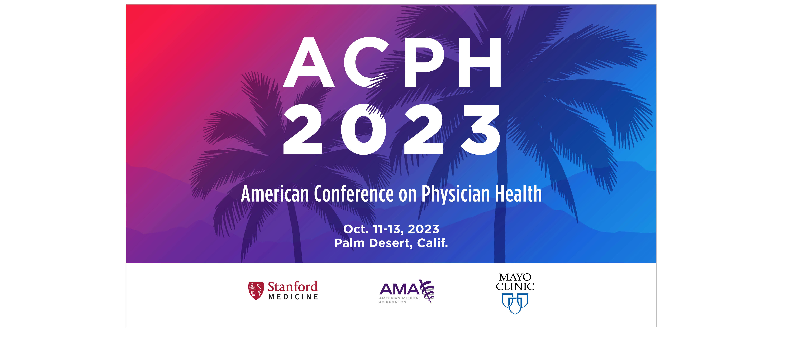
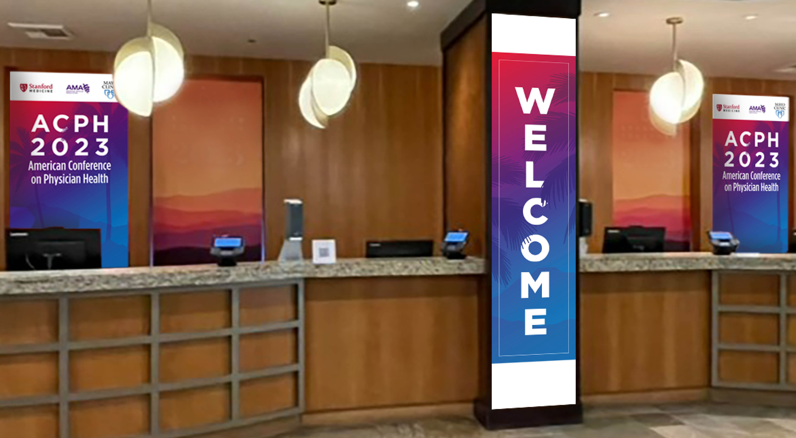
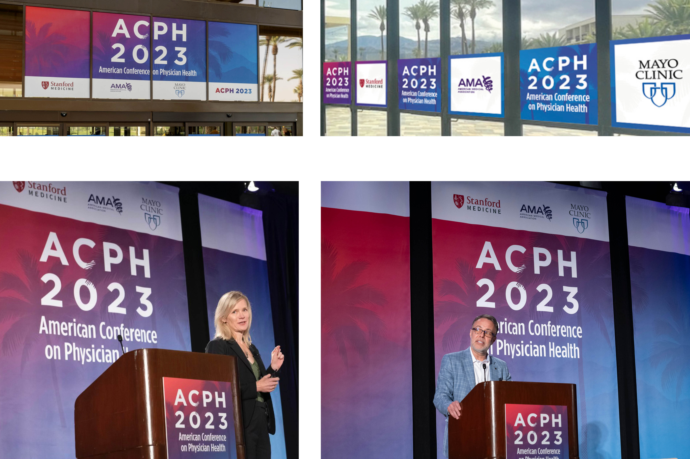
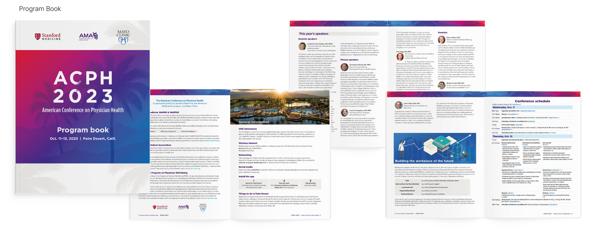
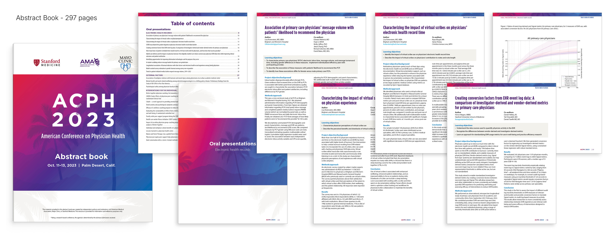
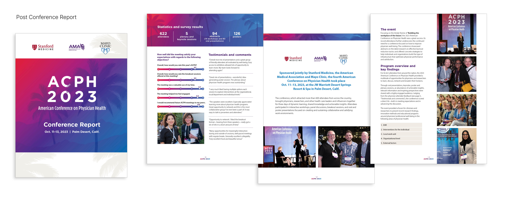
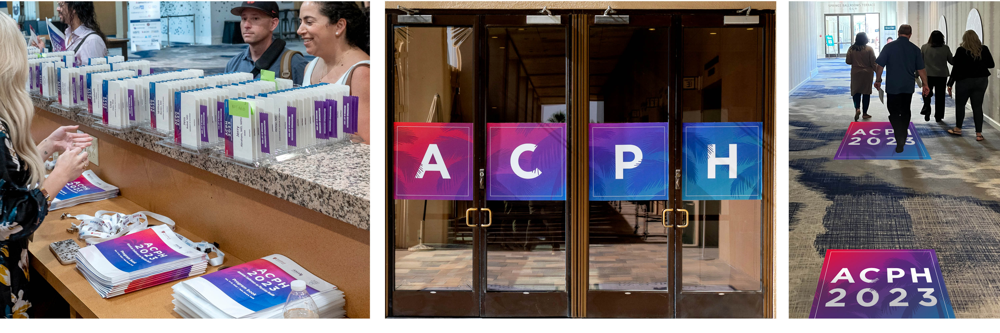
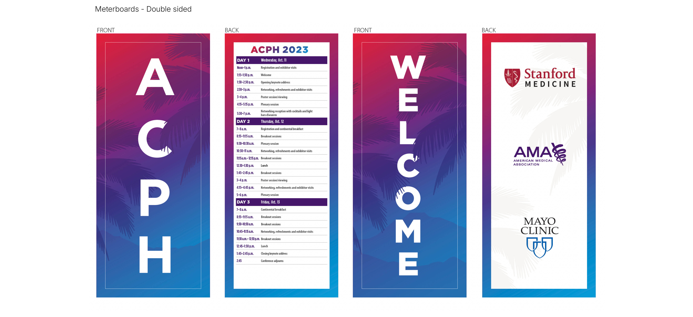
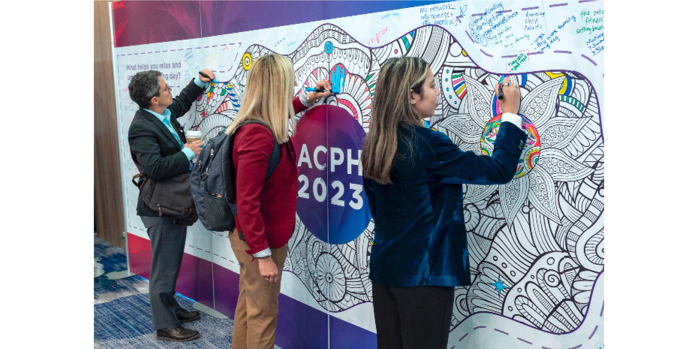

My Role
Sole designer, concept through final production
Coloring wall by Max Kalef
The American Conference on Physician Health is a biennial event co-sponsored by the American Medical Association, Mayo Clinic and Stanford Medicine. The event draws 500+ attendees and needed a visual identity that matched the caliber of its collaboration.
I developed the complete design system and applied it across every communication touchpoint, from the first social media invitations through signage, print materials, event catalogues and promotional banners. The system ensured consistency and a cohesive visual experience throughout.








